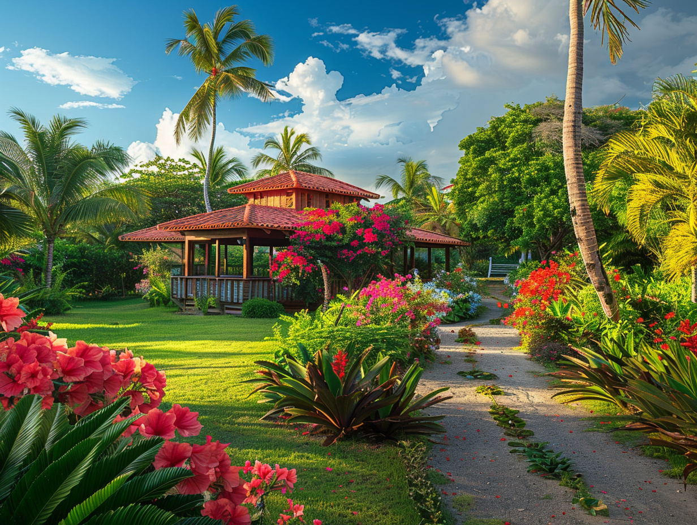
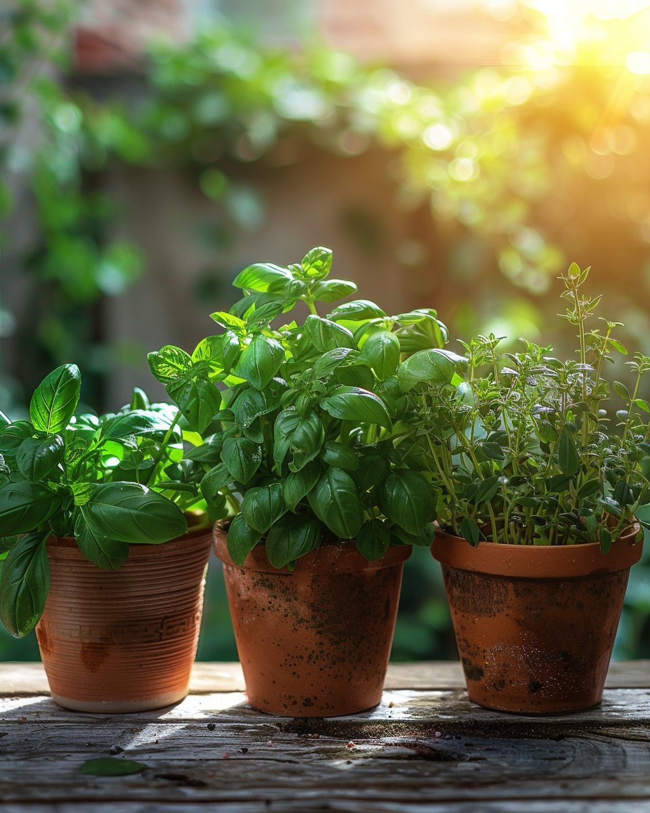

Plantes d'extérieur adaptées au climat tropical
Bougainvilliers, hibiscus, héliconias, palmiers : un large choix de végétaux qui prospèrent sous le soleil et les pluies de Guadeloupe.
Plantes d'extérieur en Guadeloupe : leur terrain de jeu
Chaleur constante, humidité, alizés, embruns : nos plantes extérieur Guadeloupe y trouvent leur équilibre naturel. Une plante d'origine tempérée s'épuise vite face à ces contraintes.
Choisir des plantes résistantes au soleil en Guadeloupe, c'est s'épargner les arrosages quotidiens et garder un jardin beau toute l'année — floraisons quasi permanentes, feuillage généreux.

Plantes tropicales pour jardin : notre sélection
Plusieurs centaines de variétés de plantes extérieur Guadeloupe en pleine terre comme en pot, organisées en trois grandes familles.
Plantes à fleurs
- Bougainvillier — la star incontestée, cascades colorées
- Hibiscus — symbole tropical, fleurs spectaculaires
- Allamanda — grimpante à floraison jaune
- Frangipanier — parfumé, port architectural
- Lantana — couvre-sol mellifère
- Heliconia — fleurs sculpturales
- Bird of Paradise — la fleur d'oiseau
Arbustes ornementaux
- Croton — feuillage panaché spectaculaire
- Codiaeum — décoratif pour structurer un massif
- Ixora — petites fleurs en bouquets serrés
- Crotalaire — arbuste mellifère et résistant
- Bambou nain — bordures graphiques persistantes
Palmiers & architecturales
- Palmier royal — tronc majestueux, grandes parcelles
- Areca — touffe élégante
- Latanier — palme en éventail
- Yucca — résistant aux embruns
- Agave — sculptural, jardin sec
- Cordyline — feuillage coloré

Plantes résistantes au soleil Guadeloupe : 3 clés
La réussite d'une plantation tropicale tient à trois choses : la profondeur du trou, la qualité du substrat et le moment choisi.
Préparez un trou trois fois plus large que la motte, mélangez la terre à du compost mûr et du terreau, arrosez copieusement la première semaine puis espacez progressivement.
Plantez de préférence en début d'hivernage (juin-octobre). Les pluies régulières permettent à vos végétaux de s'enraciner avant la saison sèche suivante.
L'entretien au fil des saisons
Adapter ses gestes à la saison, c'est garantir la vigueur de votre jardin.
Saison sèche
Augmentez les arrosages, paillez généreusement pour conserver l'humidité, et limitez la taille pour ne pas affaiblir les plants.
Saison humide
Profitez de la croissance active pour tailler, fertiliser et structurer vos massifs. Surveillez cochenilles et pucerons — un traitement au savon noir suffit.
Un apport d'engrais organique deux à trois fois par an permet de soutenir floraisons et feuillages sans épuiser le sol.
Les autres univers de la pépinière
Discutons de votre jardin
Apportez quelques photos, nos conseillers vous orientent vers les bonnes plantes selon votre exposition, votre sol et votre projet.
Trouver un conseiller